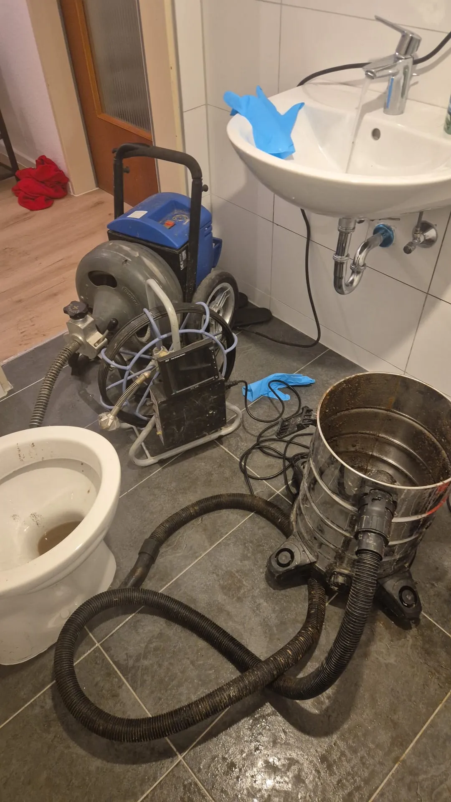

Technik & Verfahren
Hebeanlage Störung: Alarm im Keller - das sollten Sie jetzt tun
Wenn Ihre Hebeanlage einen Alarm gibt oder eine Störung meldet, zählt jede Minute: Im Auffangbehälter unter Ihrem Keller sammelt sich Abwasser, das nicht mehr abgepumpt wird. Das Wichtigste zuerst - und in dieser Reihenfolge: 1. Kein Wasser mehr einleiten. Nutzen Sie Toilette, Dusche, Waschbecken und Waschmaschine im Keller- und Souterrainbereich vorerst nicht. Jeder Liter, der jetzt hineinläuft, bringt den Behälter näher an den Überlauf. 2. Den Alarm zur Kenntnis nehmen, aber die Anlage nicht öffnen. Der Deckel bleibt zu. Eine Fäkalienhebeanlage steht unter Druck, führt Abwasser mit Krankheitserregern und hat innen scharfkantige Schneidwerke. 3. Sicherung und FI-Schalter prüfen lassen. Ist im Sicherungskasten der Fehlerstromschutzschalter (FI/RCD) herausgesprungen oder eine Sicherung gefallen, kann das die Ursache sein. Das Wiedereinschalten sollte eine Elektrofachkraft oder ein Fachbetrieb übernehmen - nicht in einer Endlosschleife durch Sie selbst. 4. Fachbetrieb rufen. Die Ursache einer Störung gehört fachkundig geklärt, bevor die Anlage weiterläuft. Dieser Artikel erklärt, wie eine Hebeanlage arbeitet, welche Störungen am häufigsten sind, was Sie selbst gefahrlos tun dürfen - und wo eindeutig Schluss ist.

Was eine Hebeanlage macht - und warum sie unverzichtbar ist
Räume unterhalb der sogenannten Rückstauebene - meist die Straßenoberkante - können ihr Abwasser nicht mit natürlichem Gefälle in den Kanal abgeben. Bei starkem Regen oder einer Verstopfung im öffentlichen Netz staut sich das Wasser zurück und würde sonst über die tiefsten Ablaufstellen - Kellertoilette, Bodenablauf, Duschtasse - in das Gebäude drücken.
Eine Abwasserhebeanlage verhindert das. Sie sammelt das anfallende Abwasser in einem geschlossenen Behälter. Ist ein bestimmter Füllstand erreicht, schaltet ein Schwimmer- oder Drucksensor die Pumpe ein, die das Wasser über eine Rückstauschleife hebt. Diese Schleife führt die Druckleitung zunächst über die Rückstauebene, bevor sie in den Kanal mündet. Dadurch kann zurückstauendes Wasser nicht in das Gebäude gelangen - es würde eher am Straßenschacht austreten.
Man unterscheidet zwei Bauarten:
- Fäkalienhebeanlage: für Abwasser mit Fäkalien, also für angeschlossene WCs. Sie hat in der Regel ein Schneidwerk oder eine Freistrompumpe für Feststoffe.
- Kleinhebeanlage / Schmutzwasserhebeanlage: für fäkalienfreies Abwasser aus Waschbecken, Dusche, Waschmaschine oder Kellerablauf.
Fällt die Anlage aus, entfällt der einzige Weg des Abwassers nach draußen. Deshalb ist eine Störung nie ein Schönheitsfehler, sondern ein akutes Thema.
Alarm ertönt - was Sie selbst tun dürfen (und was nicht)
Der akustische oder optische Alarm signalisiert meist einen zu hohen Füllstand: Die Pumpe fördert nicht (mehr) genug. Das ist Ihr Zeitfenster, bevor der Behälter überläuft.
Erlaubte Selbsthilfe:
- Wasserzufuhr im betroffenen Bereich sofort stoppen.
- Im Sicherungskasten nachsehen, ob FI-Schalter oder Sicherung ausgelöst haben. Prüfen bzw. Zurücksetzen sollte eine Fachkraft übernehmen.
- Nach Stromausfall kontrollieren, ob die Anlage wieder Spannung hat.
- Eine vom Hersteller vorgesehene Handbetätigung oder Notentleerung nutzen - nur wenn Ihre Betriebsanleitung diese Funktion ausdrücklich beschreibt und Schritt für Schritt anleitet. Gibt es keine solche beschriebene Funktion: Finger weg.
- Das Alarmsignal notieren: Dauerton, Blinkcode, Fehlernummer im Display. Diese Angaben helfen dem Fachbetrieb bei der Ferndiagnose.
Das dürfen Sie auf keinen Fall:
- Den Behälterdeckel öffnen und hineingreifen. Es besteht Infektionsgefahr durch Fäkalabwasser und erhebliche Verletzungsgefahr durch das Schneidwerk, das auch stromlos nachlaufen oder unter Restdruck stehen kann.
- Fremdkörper selbst herausangeln. Was die Pumpe blockiert, sitzt tief und fest; jeder Versuch bringt Sie mit Klingen und Keimen in Kontakt.
- Die Reset-Taste im Dauertakt drücken. Ein wiederholtes Quittieren der Fehlermeldung, ohne die Ursache zu beseitigen, überlastet Motor und Elektronik und kann einen kleinen Defekt zu einem großen machen.
- Chemische Rohrreiniger in den Zulauf kippen. Sie greifen Dichtungen, Schwimmer und Pumpenteile an und lösen die Blockade nicht.
Häufigste Störungen an der Hebeanlage
Die meisten Notrufe lassen sich auf wenige Ursachen zurückführen. Ganz vorn stehen Dinge, die nicht ins Abwasser gehören.
- Feuchttücher, Hygieneartikel und Fett verzopfen sich um Pumpenrad oder Schneidwerk oder legen es komplett lahm. Feuchttücher lösen sich - anders als Toilettenpapier - im Wasser nicht auf. Sie sind laut Fachbetrieben und Herstellern die mit Abstand häufigste Ausfallursache.
- Verklemmter oder verschmutzter Schwimmerschalter: Der Schwimmer sitzt fest, die Pumpe schaltet nicht mehr ein - oder taktet unkontrolliert ein und aus.
- Defekte Rückschlagklappe: Bereits abgepumptes Wasser läuft aus der Druckleitung zurück in den Behälter. Die Pumpe läuft dann auffällig oft, ohne den Füllstand dauerhaft zu senken.
- Verstopfte Be- und Entlüftung: Gluckernde Geräusche und Geruch im Keller sind typische Anzeichen. Ohne Druckausgleich arbeitet die Anlage schlecht.
- Stromausfall oder ausgelöster FI-Schalter: Ohne Strom keine Förderung. Feuchtigkeit in einer Klemmdose oder ein Isolationsfehler im Motor kann den FI wiederholt auslösen.
- Defekter Anlaufkondensator oder Pumpenmotor: Die Pumpe brummt, läuft aber nicht an, oder sie bleibt still. Häufig nach Blockaden, die den Motor überhitzt haben.
- Fehlermeldung von Sensor oder Steuerung: Niveausensor verschmutzt, Kabel beschädigt, Platine defekt.
Symptom-Tabelle: schnelle Einordnung
| Symptom | Wahrscheinliche Ursache | Was tun |
|---|---|---|
| Daueralarm, Behälter steigt | Pumpe blockiert (Feuchttücher/Feststoffe), Motor defekt, kein Strom | Wasserzufuhr stoppen, Strom/FI prüfen lassen, Fachbetrieb bzw. Notdienst rufen |
| Pumpe brummt, fördert nicht | Blockade im Laufrad/Schneidwerk, defekter Kondensator | Anlage nicht öffnen, Fachbetrieb rufen |
| Pumpe läuft sehr oft, Füllstand sinkt kaum | Rückschlagklappe defekt oder verschmutzt | Fachbetrieb beauftragen, Klappe prüfen/tauschen lassen |
| Pumpe schaltet ständig ein und aus | Schwimmerschalter verklemmt oder verschmutzt | Fachbetrieb; Schwimmer reinigen/justieren lassen |
| Gluckern, Geruch im Keller | Entlüftung verstopft, Rückschlagklappe undicht | Fachbetrieb; Lüftung und Klappe kontrollieren lassen |
| FI-Schalter springt wiederholt heraus | Feuchtigkeit oder Isolationsfehler im Motor/Anschluss | FI nicht dauernd wieder einschalten - Elektro-/Fachbetrieb |
| Display zeigt Fehlercode | Sensor-, Steuerungs- oder Niveaufehler | Code notieren, Fachbetrieb mit Code kontaktieren |
| Kein Alarm, aber Wasser tritt aus Kellerablauf | Anlage steht komplett, evtl. gleichzeitig Rückstau im Kanal | Sofort Notdienst - Überflutungsgefahr |
Wartungspflicht und Intervalle nach DIN
Eine Hebeanlage ist wartungspflichtig. Die Vorgaben stehen in DIN EN 12056-4 in Verbindung mit DIN 1986-3 / DIN 1986-31 (Betrieb und Wartung von Entwässerungsanlagen).
Wartung durch Fachkundige - Regelintervalle:
- Einfamilienhaus: einmal jährlich
- Mehrfamilienhaus: halbjährlich
- Gewerbliche Nutzung: vierteljährlich
Zusätzlich - monatliche Kontrolle durch den Betreiber: Die Norm empfiehlt eine monatliche Funktionsprüfung, indem Sie mindestens zwei Schaltspiele beobachten - also zweimal zusehen, wie die Pumpe anspringt und wieder abschaltet. Auffälligkeiten wie ungewöhnliche Geräusche, lange Laufzeiten oder ein träges Anlaufen sollten Sie dokumentieren.
Bei der Fachwartung werden unter anderem Pumpe und Laufrad, Schwimmer bzw. Sensorik, Rückschlagklappe, Absperrschieber, Dichtungen, elektrische Anschlüsse und der Behälterinnenraum geprüft und gereinigt. Weil das Fachwissen, Werkzeug und Hygieneschutz erfordert, empfiehlt DIN 1986-3 den Abschluss eines Wartungsvertrags mit einem Fachbetrieb. Bewahren Sie das Wartungsprotokoll auf - es ist im Schadenfall gegenüber der Versicherung wichtig.
> Hinweis: Die genaue Formulierung der Intervalle und die Zuordnung der DIN-Teile sollten Implementierung und Redaktion vor Veröffentlichung noch einmal an der aktuellen Normfassung gegenprüfen.
Was gehört nicht in eine Hebeanlage
Die einfachste Störungsprävention ist Disziplin an Toilette und Ausguss. In eine Fäkalienhebeanlage gehören nur Toilettenpapier und menschliche Ausscheidungen.
Nicht hinein gehören:
- Feuchttücher, auch "spülbare" oder "flushable" - sie zerfallen nicht
- Damenhygieneartikel, Windeln, Wattestäbchen, Wattepads
- Speisereste, Kaffeesatz, Fette und Öle (sie verharzen und verkleben das Laufrad)
- Katzenstreu, Bau- und Renovierungsschutt, Zementschlämme
- Textilien, Putzlappen, Verbandsmaterial
- Kondome, Zahnseide, Haare in größeren Mengen
Fett gehört in den Restmüll, Feuchttücher ebenfalls, Speisereste in den Biomüll. Ein deutlich sichtbarer Hinweis an der Kellertoilette - gerade in vermieteten Objekten oder Ferienwohnungen - spart erfahrungsgemäß die meisten Notrufe.
Was eine Reparatur oder Wartung grob kostet
Onkel Dienstleistungen nennt online keine Festpreise, weil Aufwand, Anlagentyp und Zustand sehr unterschiedlich sind. Zur groben Orientierung einige am Markt genannte Spannen aus frei zugänglichen Quellen:
- Reine Inspektionswartung: je nach Anbieter etwa 100 bis 200 Euro; umfangreichere Wartungen mit Reinigung oder Teiletausch mehrere hundert Euro (Quelle: Verbraucher-/Fachratgeber, siehe Link unten).
- Wartungsvertrag: in einzelnen Foren- und Anbieterangaben in der Größenordnung von rund 150 bis 500 Euro pro Jahr.
- Reparaturen: kleinere Arbeiten ab etwa 200 Euro, umfangreiche Instandsetzungen bis rund 1.200 Euro; der Austausch einer defekten Pumpe wird häufig um 500 Euro angegeben.
Das sind fremde Marktangaben, keine Preise von Onkel Dienstleistungen und keine Zusage. Ihr konkreter Fall lässt sich erst nach Sichtung der Anlage beziffern. Für ein belastbares Angebot rufen Sie an oder schreiben uns über WhatsApp.
Wann Sie sofort den Notdienst rufen sollten
Rufen Sie umgehend den 24-Stunden-Notdienst, wenn einer dieser Punkte zutrifft:
- Der Alarm läuft und der Füllstand im Behälter steigt weiter - es droht der Überlauf in den Keller.
- Aus Kellerablauf, Dusche oder Toilette tritt Wasser aus, obwohl niemand Wasser nutzt.
- Es riecht stark nach Abwasser, und die Anlage reagiert nicht auf das Quittieren des Alarms.
- Der FI-Schalter springt wiederholt heraus oder es riecht verschmort an der Steuerung.
- Bei Starkregen meldet die Anlage eine Störung - dann ist gleichzeitig Rückstau aus dem Kanal wahrscheinlich.
- Sie haben eine Verstopfung in Zulauf oder Druckleitung und können kein Wasser mehr ableiten.
Bis der Monteur da ist: kein Wasser einleiten, Anlage geschlossen lassen, wenn möglich Strom über den zuständigen Sicherungskreis abschalten lassen und Wertgegenstände vom Kellerboden hochstellen.
Onkel Dienstleistungen ist rund um die Uhr erreichbar - telefonisch unter +49 176 80750350 oder über WhatsApp. Wir sind im Einsatzgebiet Mannheim und Ludwigshafen, Heidelberg, Schwetzingen, Weinheim, Frankenthal und Viernheim unterwegs.
Häufige Fragen zur Hebeanlage
Warum piept meine Hebeanlage? Der Alarm meldet fast immer einen zu hohen Wasserstand, weil die Pumpe zu wenig oder nichts fördert. Stoppen Sie die Wasserzufuhr, prüfen Sie Strom und FI-Schalter und lassen Sie die Ursache von einem Fachbetrieb klären, bevor Sie den Alarm dauerhaft quittieren.
Kann ich die Hebeanlage bei einer Störung selbst öffnen? Nein. Der Behälter führt Fäkalabwasser mit Krankheitserregern, und das Schneidwerk ist scharf und kann nachlaufen. Öffnen, Hineingreifen und das Herausziehen von Fremdkörpern gehören ausschließlich in Fachhände mit passender Schutzausrüstung.
Wie oft muss eine Hebeanlage gewartet werden? Nach DIN EN 12056-4 im Einfamilienhaus jährlich, im Mehrfamilienhaus halbjährlich und bei gewerblicher Nutzung vierteljährlich - jeweils durch Fachkundige. Zusätzlich sollten Sie als Betreiber monatlich zwei Schaltspiele beobachten.
Was ist die häufigste Ursache für einen Ausfall? Feuchttücher und Hygieneartikel. Sie lösen sich nicht auf, wickeln sich um Pumpenrad und Schneidwerk und blockieren die Anlage. In eine Fäkalienhebeanlage gehören nur Toilettenpapier und Fäkalien.
Die Pumpe brummt, läuft aber nicht - was tun? Meist blockiert ein Fremdkörper das Laufrad oder der Anlaufkondensator ist defekt. Schalten Sie die Anlage nicht wiederholt ein, öffnen Sie nichts und rufen Sie einen Fachbetrieb - fortgesetztes Anlaufen gegen die Blockade kann den Motor zerstören.
Was kostet die Reparatur einer Hebeanlage? Das hängt stark von Anlagentyp und Schaden ab. Am Markt werden für kleinere Reparaturen ab rund 200 Euro genannt, für den Pumpentausch etwa 500 Euro. Onkel Dienstleistungen nennt online keine Festpreise - Sie erhalten nach Sichtung ein konkretes Angebot.
Wer ist bei Rückstau und Hebeanlagen-Störung schuld an Wasserschäden? Versicherer prüfen unter anderem, ob die Anlage regelmäßig gewartet wurde. Ein lückenloses Wartungsprotokoll und der Nachweis der Funktionskontrollen sind im Schadenfall wichtig - ein weiterer Grund für einen Wartungsvertrag.
---
Onkel Dienstleistungen wartet, kontrolliert und repariert Hebeanlagen in Mannheim und Umgebung - bei Rückstau- und Pumpenproblemen auch im 24-Stunden-Notdienst. Mehr zu unserem Service auf der Seite Hebeanlagen Mannheim. Bei akuter Störung: +49 176 80750350 oder WhatsApp.